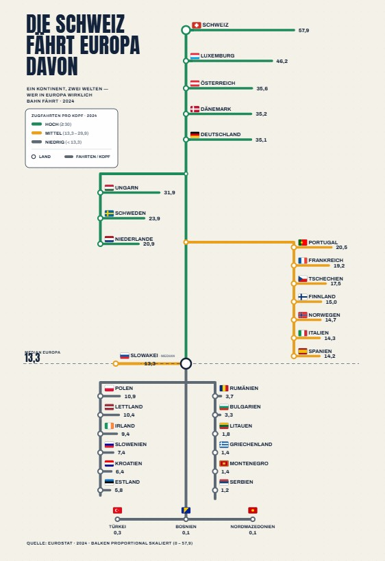

Ein Kontinent, zwei Welten — wer in Europa wirklich Bahn fährt. Aus einem schnellen ChatGPT-Draft ist eine ehrlich skalierte Metro-Karte geworden: jedes Land eine Station, jede Linie im Verhältnis der Bahnnutzung.
Infografik oder langweilige Balken? Das war eine spannende Diskussion, die sich durch einen Beitrag von Nadine Keil und die Auswertung durch Oliver Ulbrich ergeben hat — und mich danach nicht ganz losgelassen hat. Hier mein erster Draft einer Infografik: Bahnfahrer als Metro-Netz, mit Linien im Verhältnis der Bahnnutzung.
Mir gefallen sicher noch nicht alle Details — etwa die Größe der Zahlen und ein paar Sachen bei der Anordnung. Aber genau das ist der Punkt: Es zeigt, wie schnell man heute eine Idee für eine Visualisierung einfach mal ausprobieren, dann verbessern oder verwerfen kann. Infografiken sind eben kein Standard-Finanzreporting — das ist visuell meist eher ermüdend und nicht ikonisch. Eine gute Grafik bedient einen anderen Zweck: einen bleibenden Eindruck hinterlassen. Ich erinnere mich vielleicht nicht an die Zahlen, aber an die Grafik — und kann sie später googeln, weil ich Titel oder Thema noch im Kopf habe. Genau dann hat sie geschafft, was sie soll.
Das Bild teilt den Kontinent in drei Gruppen:
| Land | Gruppe | Fahrten / Kopf |
|---|---|---|
| Schweiz | Hoch | 57,9 |
| Luxemburg | Hoch | 46,2 |
| Österreich | Hoch | 35,6 |
| Dänemark | Hoch | 35,2 |
| Deutschland | Hoch | 35,1 |
| Ungarn | Hoch | 31,9 |
| Schweden | Mittel | 23,9 |
| Niederlande | Mittel | 20,9 |
| Portugal | Mittel | 20,5 |
| Frankreich | Mittel | 19,2 |
| Tschechien | Mittel | 17,5 |
| Finnland | Mittel | 15,0 |
| Norwegen | Mittel | 14,7 |
| Italien | Mittel | 14,3 |
| Spanien | Mittel | 14,2 |
| Slowakei | Median | 13,3 |
| Polen | Niedrig | 10,9 |
| Lettland | Niedrig | 10,4 |
| Irland | Niedrig | 9,4 |
| Slowenien | Niedrig | 7,4 |
| Kroatien | Niedrig | 6,4 |
| Estland | Niedrig | 5,8 |
| Rumänien | Niedrig | 3,7 |
| Bulgarien | Niedrig | 3,3 |
| Litauen | Niedrig | 1,8 |
| Griechenland | Niedrig | 1,4 |
| Montenegro | Niedrig | 1,4 |
| Serbien | Niedrig | 1,2 |
| Türkei | Niedrig | 0,3 |
| Bosnien | Niedrig | 0,1 |
| Nordmazedonien | Niedrig | 0,1 |
Quelle: Eurostat, 2024 · Zugfahrten pro Kopf und Jahr.
Auffällig ist weniger die Spitze als die Mitte. Die großen Bahnnationen sind keine Überraschung — die Schweiz mit dem dichtesten Taktfahrplan Europas, dazu die kleinen, gut vernetzten Länder Luxemburg und Österreich. Spannender ist, dass selbst Frankreich und Italien — beides Länder mit Hochgeschwindigkeitsnetzen und Milliardeninvestitionen — im Mittelfeld landen: Tempo auf der Fernstrecke ist eben etwas anderes als alltägliche Bahnnutzung über die gesamte Bevölkerung gerechnet.
Und unter dem Median wird aus dem Gefälle ein Abgrund. Wo das Netz dünn, der Takt selten und das Auto Standard ist, fährt die Bevölkerung statistisch fast gar nicht mit der Bahn. Die „zwei Welten" sind also keine reine Nord-Süd- oder Ost-West-Frage, sondern eine Frage von Netzdichte, Takt und Gewohnheit.
Die Ausgangsgrafik kam aus einem schnellen Draft von ChatGPT — als U-Bahn-Plan angelegt, schön anzusehen, aber die Balken waren rein dekorativ und nicht maßstabsgetreu. Ziel war eine Version, die den Metro-Look behält, aber ehrlich skaliert. Schritt für Schritt ist daraus eine eigenständige HTML-Grafik geworden.

Das Ergebnis ist eine Grafik, die auf den ersten Blick wie ein Liniennetzplan wirkt — und auf den zweiten Blick als Balkendiagramm funktioniert, das man tatsächlich ablesen kann.
Europa fährt nicht gemeinsam Bahn, es fährt in zwei Geschwindigkeiten. Zwischen 57,9 und 0,1 Fahrten pro Kopf liegt kein Detail, sondern ein struktureller Unterschied — und genau den macht eine Grafik sichtbar, sobald die Balken ehrlich skaliert sind.
Vom Infografik-Experiment zum Vortrag — der Talk über moralisch ausgerichtete KI.